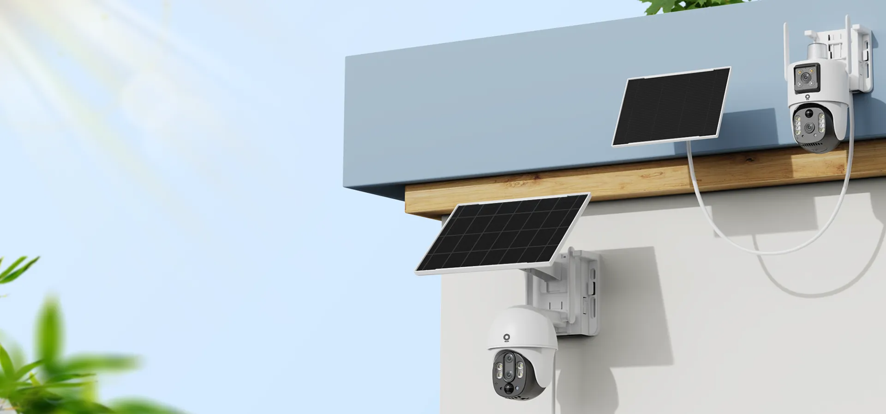
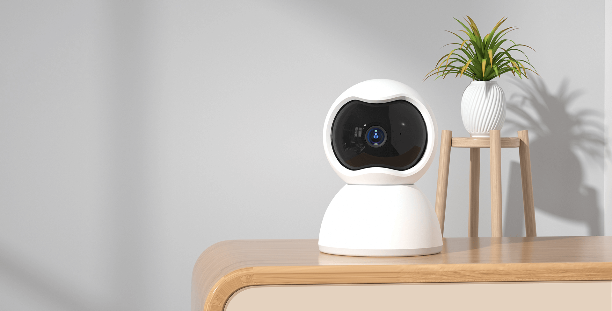

V380 Pro 快问快答：智能摄像头从配网到夜视一篇讲透
整理了 8 个 V380 用户最常问的问题——从它到底是啥、怎么装不上、夜里画面黑怎么办，到 AI 人形识别要不要开、2.4GHz 是硬伤吗，逐一给出直接答案。
整理一篇关于 V380 Pro 的快问快答——都是从用户群里捞出来的高频问题，直接答，不绕弯。
V380 Pro 到底是什么？适合谁用？
一句话：V380 Pro 是 V380 Pro 官网 推出的 V380 系列智能摄像头手机 App，配合自家或兼容 V380 协议的摄像头使用。它的定位就是「家用和小规模监控」——门口、阳台、仓库、小店收银台这些场景最常见。如果你买过百元级的智能摄像头，大概率听过这个名字。
买了摄像头怎么装不上？配网到底有几种方式？
V380 摄像头配网主要有两种，二维码配网是主流——App 安装包从 v380pro下载 拿就行——机身扫一下、选 WiFi、生成二维码让摄像头看，三步完事。如果机身二维码刮花了或者扫码反复失败，就用 AP 热点配网 兜底——摄像头自己会开一个 WiFi 热点（前缀可能是 MV、HSC、XVV），手机先连上这个热点，再在 App 里走流程。Android 10 以上要注意：系统可能提示「此 WiFi 无法访问互联网」要自动断开，记得点「保持连接」。

配网最容易踩的坑是什么？
2.4GHz 是硬伤。V380 摄像头基本只支持 2.4GHz WiFi，但很多家庭路由器把 2.4G 和 5G 合并成了同一个 SSID，手机自动连 5G 后 App 就配不上。简单检查方法：手机 WiFi 设置里关掉 5GHz 再试，或者路由器后台把两个频段分成不同名称。另一个坑是路由器开了 AP 隔离——配网流程走完但设备始终离线，去路由器后台把「AP 隔离」或「访客网络隔离」关掉就好。
夜里画面是黑的？夜视模式你选对了吗？
V380 摄像头夜视分三种：红外夜视（黑白、隐蔽性好）、白光全彩（彩色、LED 灯补光）、双光混合（自动切换）。大部分新款是双光款，默认自动判断。画面全黑先检查两件事：红外灯亮没亮（手机摄像头能拍到红外红点）、外壳上的光敏电阻有没有被灰尘或配件挡住——挡住了摄像头就一直以为是白天，红外灯不开。如果画面发白有光晕，多半是摄像头正对了玻璃或反光物，调个角度就行。
AI 人形识别是什么？和普通移动侦测有什么区别？
普通移动侦测只看「画面像素有没有变化」——树叶晃、光影移、猫路过全触发，误报率高。AI 人形识别是用本地 AI 芯片分析画面，只有检测到类似人形轮廓才触发报警。目前大部分用户能买到的是基础款（只识别人），进阶款能同时识别车辆、宠物、包裹，旗舰款再加烟雾、火焰、越界检测。开启后建议把纯移动侦测关掉，只保留 AI 人形这一条，报警最干净。

AI 识别不出来怎么办？
先调灵敏度到「高」再试。常见原因有：人离摄像头太远（AI 识别距离有限）、光线太暗（红外夜视下识别率会下降）、人被遮挡（大帽子、大件东西挡住身体）。如果这些情况经常发生，配合 划定报警区域 使用效果更好——把摄像头对准真正关心的通道入口，缩小 AI 的识别范围。查更细的参数说明和调试技巧，去 v380pro文档 翻一下最省事。
要不要付费？有什么限制？
基础功能（实时预览、录像回看、双向语音、移动侦测报警）都是免费的。云存储是收费项——厂家一般按年订阅，具体价格看各地区活动。本地录像用 TF 卡就行，没有额外成本。需要注意的是：不同厂家的 V380 摄像头 AI 能力差异很大，老款没有前端 AI 芯片，只能用纯移动侦测，这个是硬件限制，付费也解不了。
和其他智能摄像头方案比怎么样？
V380 的优势是便宜、兼容协议广——百元级摄像头里到处都是支持 V380 的型号，坏了随便换一个同协议的就行。劣势是生态封闭，和米家、HomeKit 这些主流智能家居平台不打通，画面只能在 V380 Pro App 里看。如果家里已经是米家或苹果生态，不如直接买对应平台的摄像头；如果就是想单独装几个监控、预算有限，V380 是性价比很高的选择。
最后一句：预算不高、需要几个独立的监控点位，直接买一台支持 V380 的摄像头装个 App，够用；想接智能家居生态或者需要高级 AI 能力，加预算上一线品牌更省心。顺手说一句，这份整理出来的资料在 GitHub、Gitee 和 GitCode 都放了一份，国内访问哪家顺手用哪家。